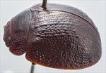
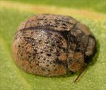
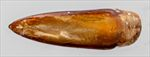
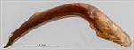
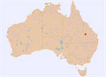

Click on images to enlarge
{kind=link}

Male, Carnarvon N.P., Injune, Central Queensland
{kind=link}

Male, Carnarvon N.P., Injune, Central Queensland
{kind=link}

Aedeagus, dorsal view (Carnarvon N.P., Injune, central Queensland)
{kind=link}

Aedeagus, lateral view (Carnarvon N.P., Injune, central Queensland)
{kind=link}

Distribution
Name
Trachymela sp. Ta94
Reference specimen
2005-061, Carnarvon N.P., Mt Moffat Section, central Queensland.
Adult Description
- Head: uniformly reddish-brown, sometimes fronto-clypeal suture a slightly darker shade; labrum straw-brown, mandibles with dark-brown to black tips; antennae straw-brown, sometimes with distal portions of outer segments fractionally darker.
- Pronotum: reddish-brown, lateral marginal area concolorous with head, with a round elevation in centre of foveal area slightly darker, disc dark-brown, with anterior margin fringed in a slightly paler shade.
- Scutellum: dark-brown, concolorous with adjacent part of pronotum, with lateral margins fringed in a darker shade.
- Elytra: brown, concolorous with disc of pronotum, with marginal area and sometimes small patches along anterior edge of a slightly paler shade, punctures dark-brown, contrasting with interstices only in marginal area, humeral callus concolorous with surrounding area.
- Venter & Legs: dark reddish-brown with legs concolorous, head usually fractionally darker, elytral epipleura concolorous dark brown.
- Cuticular Wax: slightly uneven and moderately thick layer of mid-brown over prothorax and most of elytra, with antero-median depression a paler shade of brown, almost greyish.
Morphology:
- Head: punctures mixed in size (pd ≈ 1–3 × ef), rather evenly and densely distributed. Antennae very short (AL/BL: ♂ 34.2%, ♀ 31.4%), filiform, outer segments noticeably flattened.
- Pronotum: almost evenly curved transversely with lateral margins very slightly explanate, foveal depression shallow with a clearly defined and almost round elevated area behind centre of eye, puncturation clearly impressed, similar in size to larger punctures on head and rather evenly distributed in discal area, becoming much coarser from foveal depression to lateral margins, interstices usually smooth or slightly undulating in discal area. Front margins join lateral margins in a smoothly rounded right-angle, with lateral margin initially almost straight for half the distance to rear margin before curving smoothly and gradually towards rear margin.
- Scutellum: uneven and usually with a few relatively large but very shallow and poorly defined punctures.
- Elytra: body very evenly rounded throughout with curvature only increasing quite close to apex, discontinuity between pronotum and elytra small, greatest height viewed laterally is a little in front of middle of elytral margin; surface evenly curved throughout transversely with no apparent explanate margins, lightly curved longitudinally over all but posterior 25%, where curvature increases, a very shallow depression extends across surface just in front of middle, punctures large and distinct and relatively evenly distributed set deeply among the network of raised interstices, many much smaller punctures are scattered among them, elevated interstices form longitudinal ridges, primarily anterior to antero-median depression, small round but quite inconspicuous verrucae, often with a small puncture in centre, sometimes, especially more anteriorly on elytra, not well elevated and smoothly rounded, are present in posterior two-thirds of elytral disc, and are sometimes arranged in longitudinal series, elytral suture carinate in posterior third, surface continuous under humeral callus. Vertical extension of epipleura considerable (HCE/PW = 0.35–0.36).
- Venter: prosternal process parallel-sided or narrowing fractionally anteriorly, widening evenly towards posterior, lightly closed anteriorly, short setae sparsely distributed over prosternal process and mesoventrite, a single seta on anterior and median trochanter; front edge of metaventrite beveled, truncate; inner edge of posterior of epipleurae lacking setae.
Male Genitalia (Aedeagus):
- Dimensions: short (LPE/BL = 28.5%), lanceolate.
- Dorsal view: shaft widest at rear with sides converging in straight line or slightly sinuous arc from there to tip with angle of convergence increasing slightly about 10% of distance from tip, dorsal surface membranous with a very faint dorso-median channel present, ostium very small, tip triangular.
- Lateral view: shaft curved at 60° a little anterior to past basal sulcus, lower edge towards apex from bend initially straight for a short distance then almost evenly but slightly curved to apex, dorsal surface elevated into a slight peak at about 30% of length posteriorly from apex, tip deflexed.
Immature Stages
Unknown.
Similar species
- Ta93: this rather similar species is smaller, with an even darker and prominently nitid dorsal and ventral surface.
- Ta16: distinguishable from that superficially similar species by its much less conspicuous verrucae and the lack of black inner epipleural surfaces. The aedeagus of the two species is very similar, though that of Ta94 is slightly longer.
Notes
- Morphological Variation: This small, dark Trachymela does have small verrucae on its elytra, but these are quite inconspicuous and mostly confined to the posterior of the elytral disc.
- Host Associations: Both known specimens were obtained at mercury-vapour (M.V.) light, so no host information is available.
Copyright © 2026. All rights reserved.